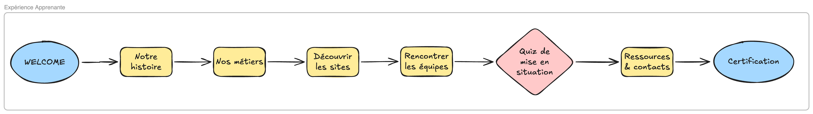

Cas 4 · Guerbet
Transformer un onboarding animé en direct en un parcours autonome et international.
01 · Contexte
Pendant deux journées, les nouveaux collaborateurs participaient à plusieurs webinaires animés en direct par le COMEX et des experts métier. Pour couvrir plusieurs fuseaux horaires, les mêmes sessions étaient répétées. Ce modèle mobilisait fortement les équipes et proposait une expérience difficile à maintenir de manière homogène à l'échelle internationale.
Avant le projet · onboarding animé en direct
Nouveaux collaborateurs
Deux journées d'intégration
↓
Webinaires animés en direct
COMEXExperts métier
↓
Sessions répétées
Selon les fuseaux horaires
Forte mobilisation des équipes
Coordination importante nécessaire
Expérience variable selon les intervenants
02 · Conception de la solution
D'un onboarding descendant à une expérience d'apprentissage interactive.
BLUEPRINT

L'architecture pédagogique du parcours, de l'accueil à la certification, conçue avant la production des écrans.
LE LIVRABLE · PARCOURS FINAL

03 · Impact
Le nouveau modèle · parcours autonome
Nouveaux collaborateurs
→
LMSAccès autonome
→
Modules interactifs
→
Certification
→
Journée d'intégration sur site
Même expérience mondiale
Déployable sans mobiliser les experts
Efficacité
42 h
Temps COMEX économisé chaque année.
Déploiement
10 pays
10 langues · présence internationale.
Pilotage
35 K€
Budget piloté.